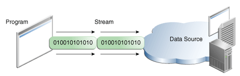

Lección: E/S Básica
Flujos E/S
Un Flujo de E/S representa una fuente de entrada o un destino de salida. Un flujo puede representar muchas clases diferentes de fuentes y destinos, incluyendo archivos en disco, dispositivos, otros programas, y matrices en memoria.
Los flujos soportan muchas clases diferentes de datos, incluyendo bytes simples, tipos de datos primitivos, caracteres internacionales, y objetos. Algunos flujos simplemente transfieren datos, otros manipulan y transforman los datos de útiles maneras.
No importa como trabajan internamente, todos los flujos presentan el mismo modelo simple a los programas que los usan; Un flujo es una secuencia de datos. Un programa usa un flujo de entrada para leer datos de una fuente, un item cada vez:

Lectura de información en un programa.
Un programa usa un flujo de salida para escribir datos en un destino, un item cada vez:

Escribir información de un programa.
En esta lección, veremos flujos que pueden manejar todas las clases de datos, desde valores primitivos a objetos avanzados.
La fuente de datos y el destino de datos fotografiados arriba pueden ser cualesquiera que contengan, generen, o consuman datos. Obviamente esto incluye archivos de disco, pero una fuente o un destino pueden también ser otro programa, un dispositivo periférico, un socket de red, o una matriz.
En la siguiente sección, usaremos la clase de flujos más básicos, los flujos de bytes, para demostrar las
operaciones comunes de E/S de los flujos. Como ejemplo de entrada usaremos el fichero de ejemplo
xanadu.txt
, que contiene el siguiente verso:
En Xanadu hizo Kubla Khan
Un decreto majestuoso:
Donde Alph, el río sagrado, corrió
A través de cavernas sin medida para el hombre
Hasta un mar sin sol.